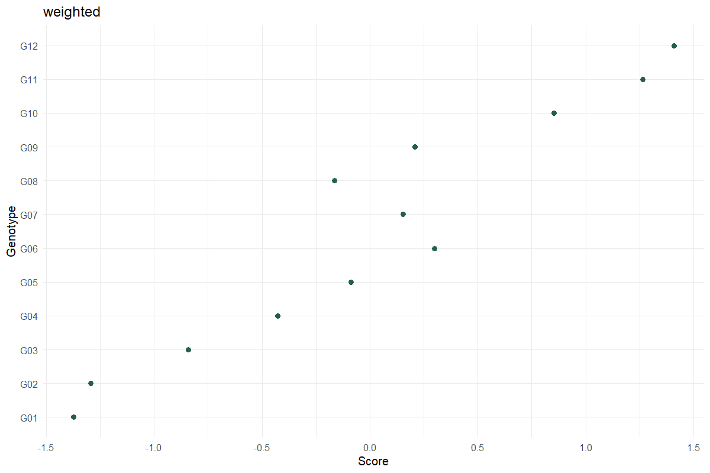
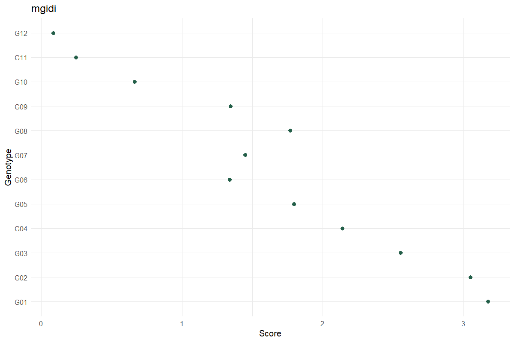

Worked analysis · 2 executable examples
Multi-Trait Selection
Make the ideotype and weights explicit
Question and data
Supply one row per genotype and numeric trait columns. Specify traits where lower is desirable, the weights and the selected percentage; confirm the direction choices before running.
Read and report the results
Weighted scores average signed standardized traits. MGIDI instead uses a factor model and distance to an ideotype. Report the chosen method and weights. The selection cutoff uses ceiling(n × percentage/100), retaining all ties.
Run the examples
From the repository root, restore the locked dependencies and load the app functions. These are source-checkout examples, not an installed package API.
source("tools/example-cases.R")
load_drdesign()In Shiny, select this module from its workflow heading, upload the example CSV, map the columns, review observations and run. Each R example states the analysis options to reproduce.
selection-weighted
Synthetic teaching data; not evidence from a field experiment.
Input
| Genotype | Yield | Height | Maturity |
|---|---|---|---|
| G01 | 21.974 | 49.476 | 100.929 |
| G02 | 22.135 | 52.809 | 102.262 |
| G03 | 23.178 | 55.219 | 101.148 |
| G04 | 24.293 | 53.974 | 98.426 |
| G05 | 24.431 | 54.594 | 96.416 |
| G06 | 25.799 | 58.388 | 96.782 |
| G07 | 26.504 | 59.500 | 99.003 |
| G08 | 26.862 | 58.128 | 100.854 |
Showing up to 8 of 12 observations. The CSV contains every row.
Analysis
data <- research_example("multi-trait-selection")
result <- run_multi_trait_selection(data,c("Yield","Height","Maturity"),lower_traits="Maturity",method="weighted")Computed output
Rankings 12 rows
| Source / term | Genotype | Score | Selected | Rank |
|---|---|---|---|---|
| 12 | G12 | 1.410 | True | 1 |
| 11 | G11 | 1.266 | True | 2 |
| 10 | G10 | 0.853 | False | 3 |
| 6 | G06 | 0.299 | False | 4 |
| 9 | G09 | 0.208 | False | 5 |
| 7 | G07 | 0.154 | False | 6 |
| 5 | G05 | -0.088 | False | 7 |
| 8 | G08 | -0.163 | False | 8 |
| 4 | G04 | -0.428 | False | 9 |
| 3 | G03 | -0.842 | False | 10 |
| 2 | G02 | -1.294 | False | 11 |
| 1 | G01 | -1.374 | False | 12 |
Selection differentials 3 rows
| Trait | Desired | Population Mean | Selected Mean | Differential |
|---|---|---|---|---|
| Yield | Higher | 26.032 | 30.092 | 4.060 |
| Height | Higher | 57.665 | 63.080 | 5.415 |
| Maturity | Lower | 98.745 | 95.346 | -3.399 |
Reviewed data 12 rows
| Genotype | Yield | Height | Maturity |
|---|---|---|---|
| G01 | 21.974 | 49.476 | 100.929 |
| G02 | 22.135 | 52.809 | 102.262 |
| G03 | 23.178 | 55.219 | 101.148 |
| G04 | 24.293 | 53.974 | 98.426 |
| G05 | 24.431 | 54.594 | 96.416 |
| G06 | 25.799 | 58.388 | 96.782 |
| G07 | 26.504 | 59.500 | 99.003 |
| G08 | 26.862 | 58.128 | 100.854 |
| G09 | 28.346 | 60.080 | 100.449 |
| G10 | 28.677 | 63.657 | 97.976 |
| G11 | 29.418 | 63.493 | 95.526 |
| G12 | 30.766 | 62.667 | 95.166 |
Software versions 8 rows
| Source / term | Package | Version |
|---|---|---|
| R | 4.5.3 | |
| shiny | shiny | 1.13.0 |
| agricolae | agricolae | 1.3.7 |
| metan | metan | 1.19.0 |
| lme4 | lme4 | 2.0.1 |
| emmeans | emmeans | 2.0.2 |
| SpATS | SpATS | 1.0.20 |
| DiallelAnalysisR | DiallelAnalysisR | 0.6.0 |
Analysis settings 4 rows
| Setting | Value |
|---|---|
| Method | weighted |
| Lower_traits | Maturity |
| Weights | 1, 1, 1 |
| Selection_percent | 15 |

selection-mgidi
Synthetic teaching data; not evidence from a field experiment.
Input
| Genotype | Yield | Height | Maturity |
|---|---|---|---|
| G01 | 21.974 | 49.476 | 100.929 |
| G02 | 22.135 | 52.809 | 102.262 |
| G03 | 23.178 | 55.219 | 101.148 |
| G04 | 24.293 | 53.974 | 98.426 |
| G05 | 24.431 | 54.594 | 96.416 |
| G06 | 25.799 | 58.388 | 96.782 |
| G07 | 26.504 | 59.500 | 99.003 |
| G08 | 26.862 | 58.128 | 100.854 |
Showing up to 8 of 12 observations. The CSV contains every row.
Analysis
data <- research_example("multi-trait-selection")
result <- run_multi_trait_selection(data,c("Yield","Height","Maturity"),lower_traits="Maturity",method="mgidi")Computed output
Rankings 12 rows
| Genotype | Score | Selected | Rank |
|---|---|---|---|
| G12 | 0.084 | True | 1 |
| G11 | 0.245 | True | 2 |
| G10 | 0.662 | False | 3 |
| G06 | 1.338 | False | 4 |
| G09 | 1.346 | False | 5 |
| G07 | 1.449 | False | 6 |
| G08 | 1.768 | False | 7 |
| G05 | 1.796 | False | 8 |
| G04 | 2.140 | False | 9 |
| G03 | 2.552 | False | 10 |
| G02 | 3.049 | False | 11 |
| G01 | 3.174 | False | 12 |
Selection differentials 3 rows
| Trait | Desired | Population Mean | Selected Mean | Differential |
|---|---|---|---|---|
| Yield | Higher | 26.032 | 30.092 | 4.060 |
| Height | Higher | 57.665 | 63.080 | 5.415 |
| Maturity | Lower | 98.745 | 95.346 | -3.399 |
Reviewed data 12 rows
| Genotype | Yield | Height | Maturity |
|---|---|---|---|
| G01 | 21.974 | 49.476 | 100.929 |
| G02 | 22.135 | 52.809 | 102.262 |
| G03 | 23.178 | 55.219 | 101.148 |
| G04 | 24.293 | 53.974 | 98.426 |
| G05 | 24.431 | 54.594 | 96.416 |
| G06 | 25.799 | 58.388 | 96.782 |
| G07 | 26.504 | 59.500 | 99.003 |
| G08 | 26.862 | 58.128 | 100.854 |
| G09 | 28.346 | 60.080 | 100.449 |
| G10 | 28.677 | 63.657 | 97.976 |
| G11 | 29.418 | 63.493 | 95.526 |
| G12 | 30.766 | 62.667 | 95.166 |
Software versions 8 rows
| Source / term | Package | Version |
|---|---|---|
| R | 4.5.3 | |
| shiny | shiny | 1.13.0 |
| agricolae | agricolae | 1.3.7 |
| metan | metan | 1.19.0 |
| lme4 | lme4 | 2.0.1 |
| emmeans | emmeans | 2.0.2 |
| SpATS | SpATS | 1.0.20 |
| DiallelAnalysisR | DiallelAnalysisR | 0.6.0 |
Analysis settings 4 rows
| Setting | Value |
|---|---|
| Method | mgidi |
| Lower_traits | Maturity |
| Weights | 1, 1, 1 |
| Selection_percent | 15 |

Reporting conventions
Tables: estimates and standard errors to 3 decimals; p-values below 0.001 shown as <0.001. Very small or large values use scientific notation. NA means unavailable or not applicable. CSV files retain numerical precision. Confidence levels and multiplicity corrections follow the stated analysis settings; shared letters indicate non-rejection, not equivalence.